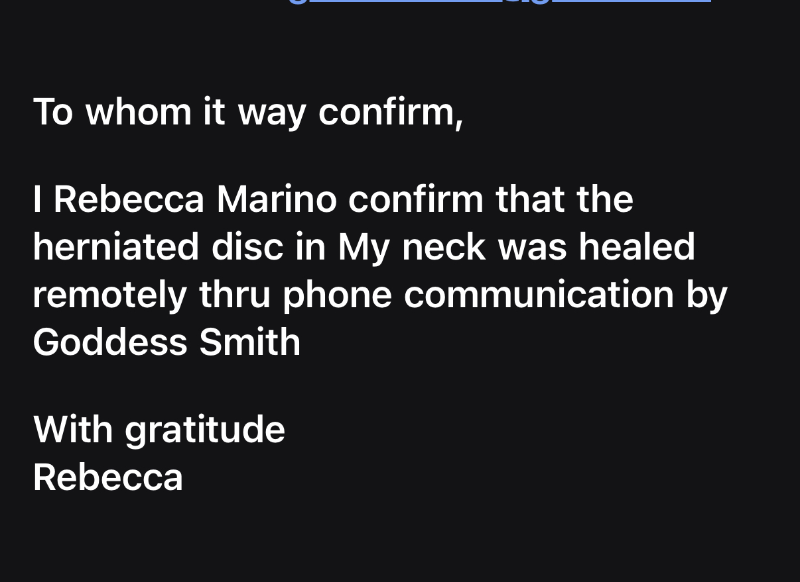
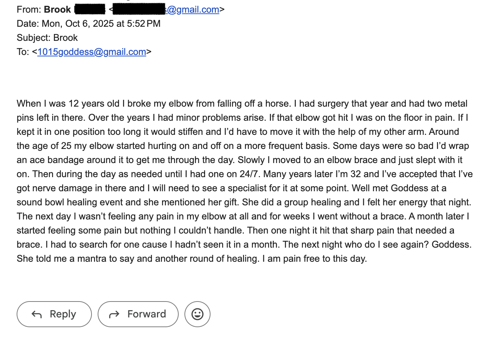
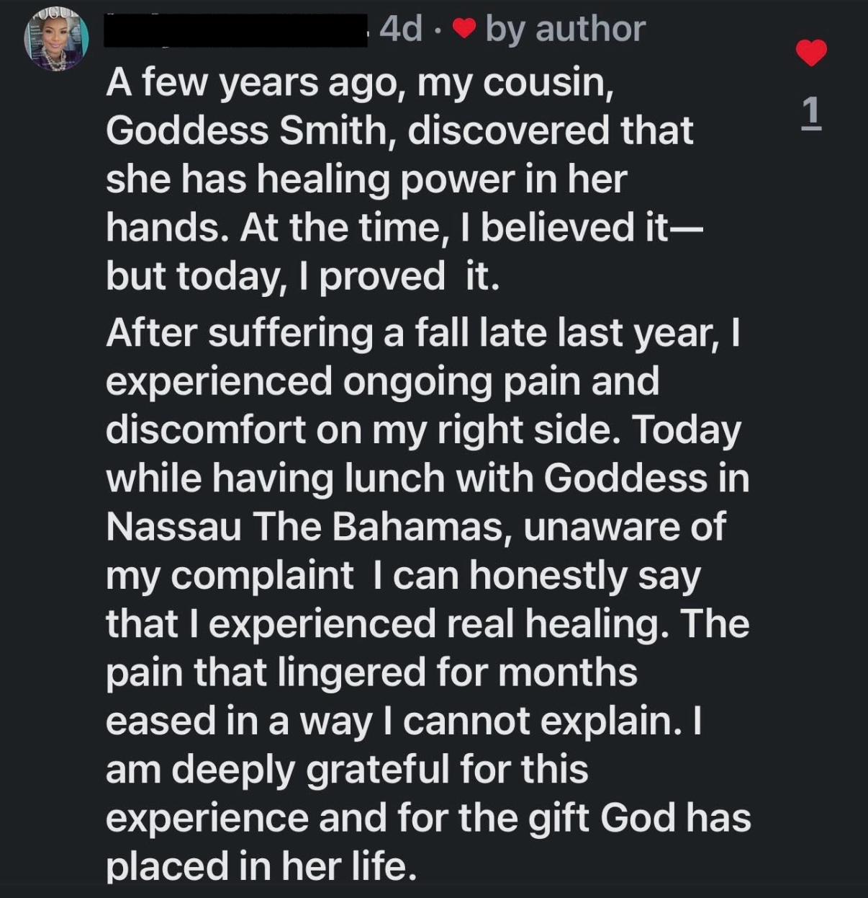
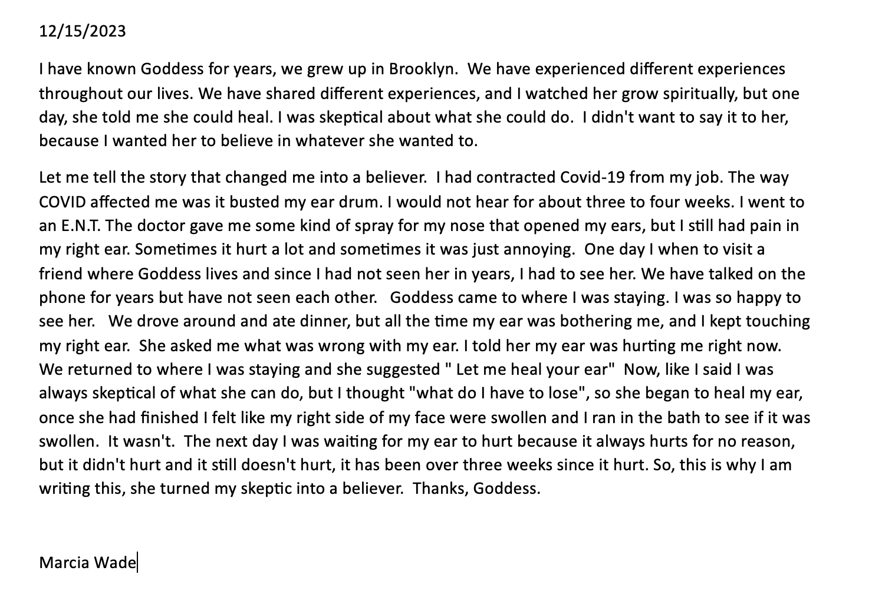
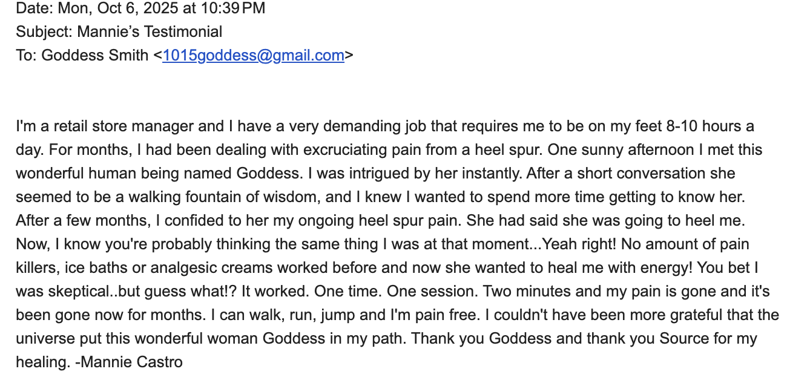

Testimonials
Stories of healing and transformation
Hip Healing
A Baby’s Rash
A Neighbor’s Story
Multiple Healings with Mari
Maria’s Toe
Janet
Andy
Max Feels It
Michelle’s Healing
Sample Horizontal Video NEW · horizontal
Another New Video NEW · vertical
Notes of gratitude, in their own words
Tap to read





Read the letters